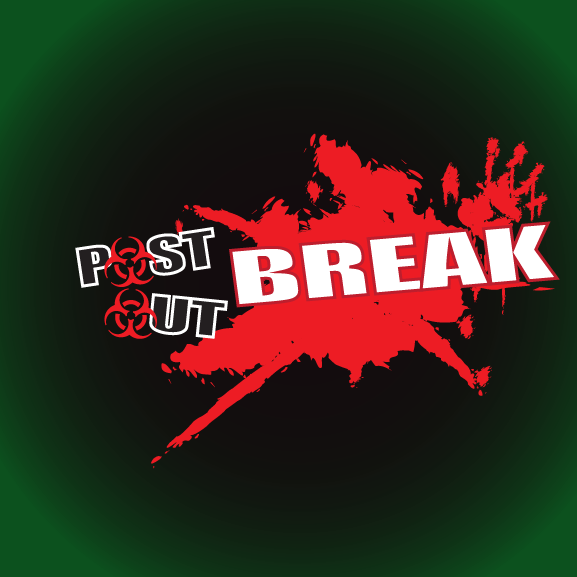

In a world where zombies have roamed for years, the cycle of life has continued and almost came to partial normalcy at the 10 year anniversary of the first zombie spotting. Almost as if on cue, the world threatens to fall apart once again at the introduction of new genetically modified zombies, nuclear warfare, angry humans, and terrifying creatures no one has ever seen before. Imani and Malik Wright are suddenly thrust from the safety of their home and forced to travel throughout the eastern side of America to find safety. They might learn more about why the world is changing and secrets unknown to the average citizen along the way, changing their view on the people that surround them consistently.
